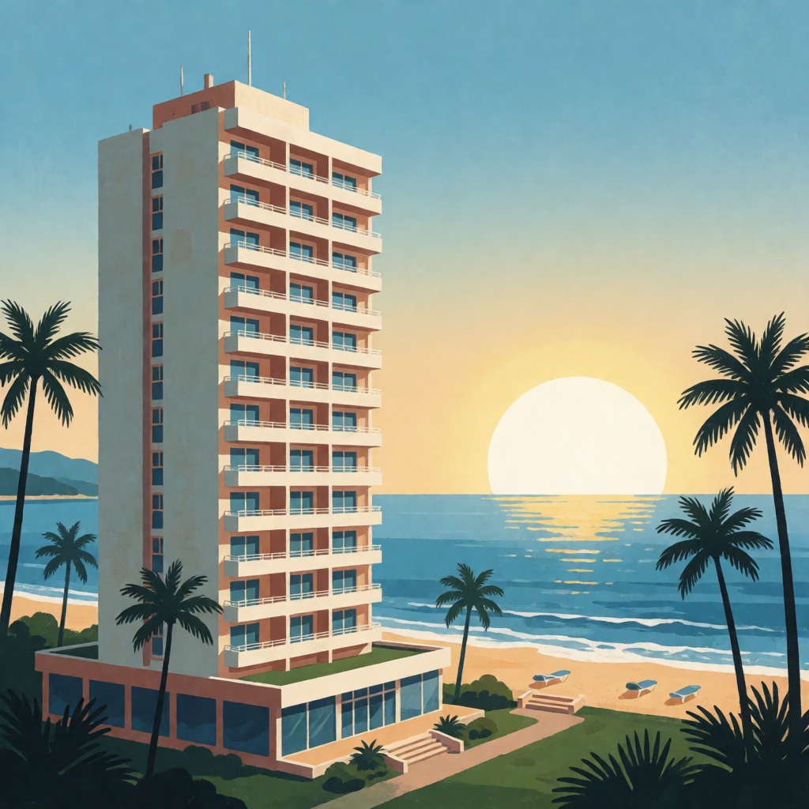
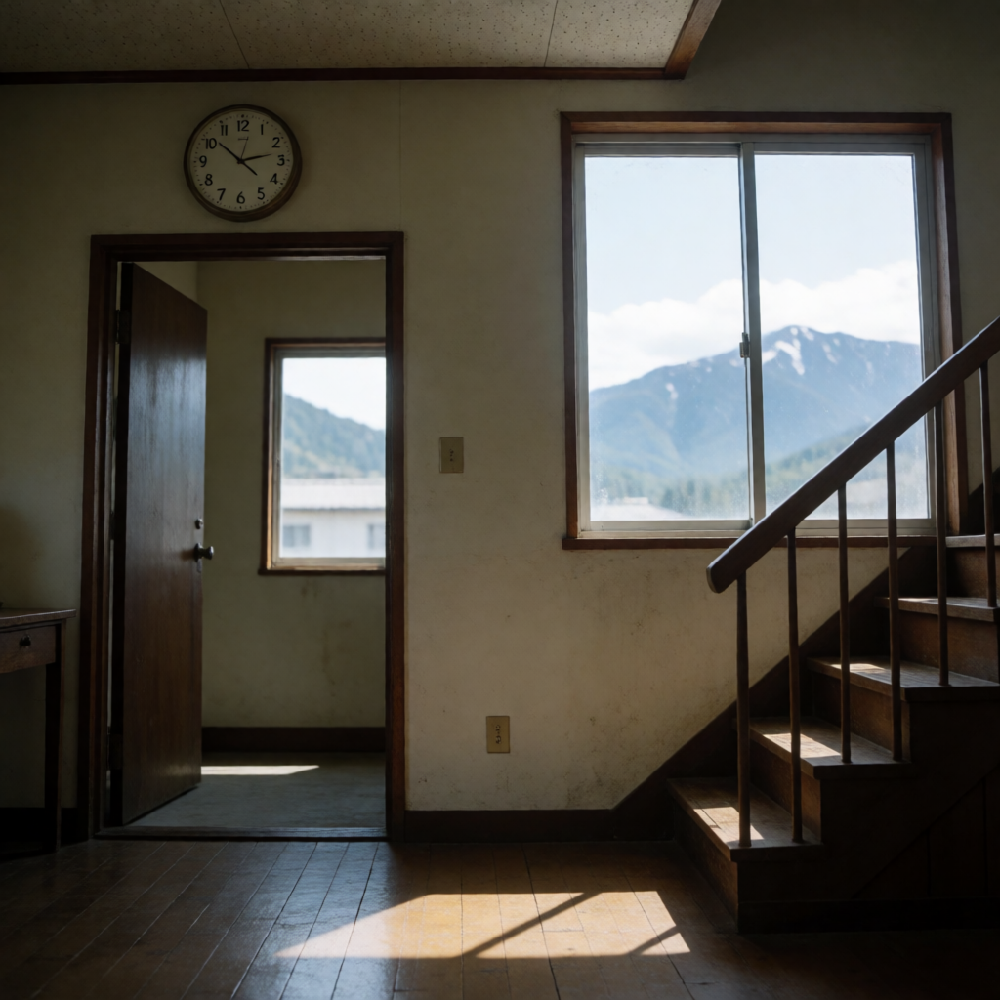
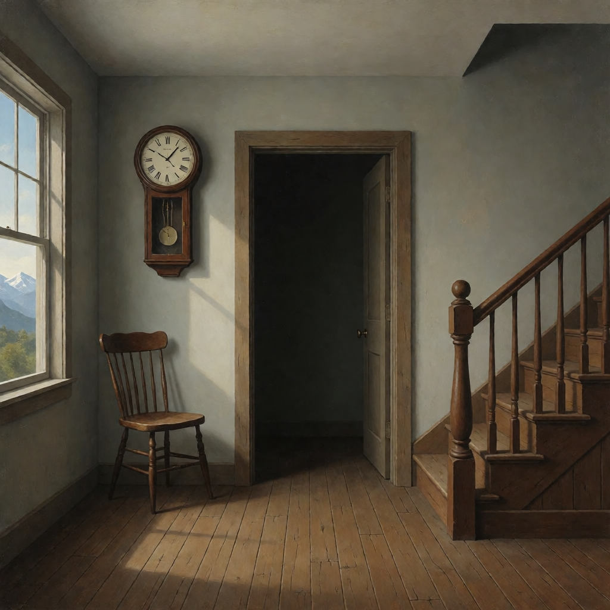
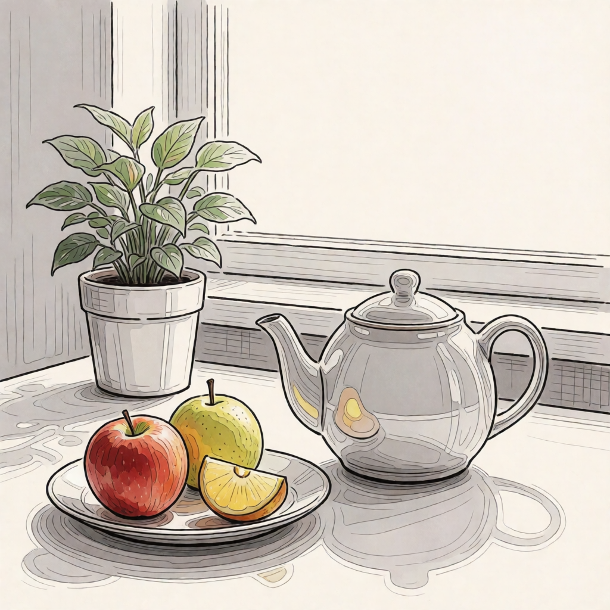
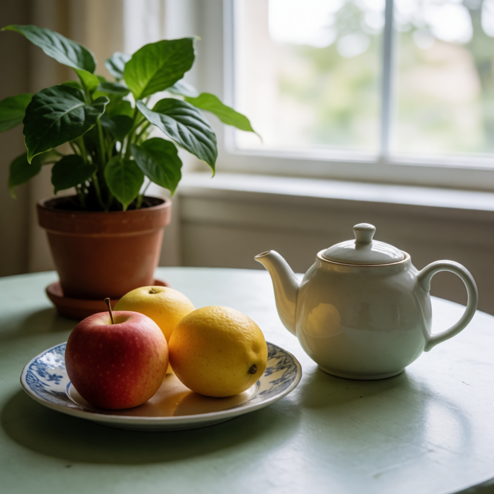
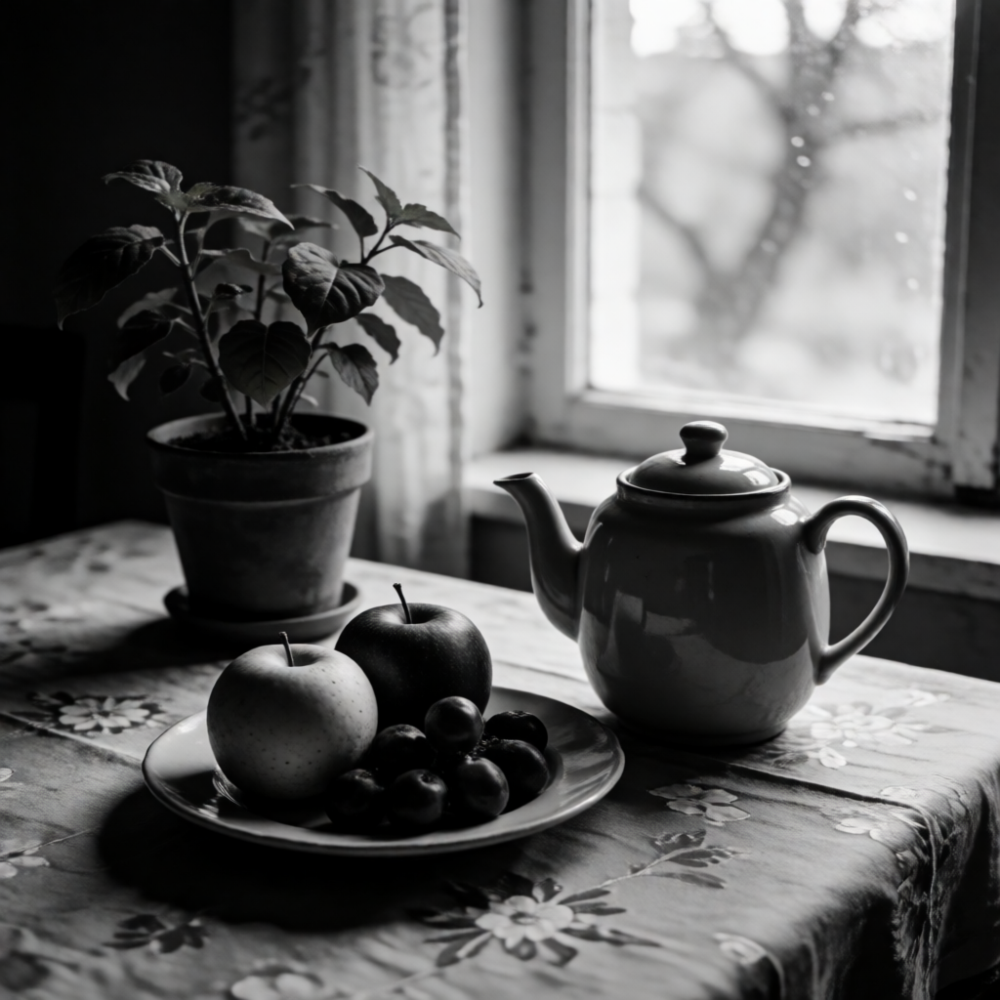

无风格对照art-deco-poster-baselineA travel poster showing a tall coastal hotel, the sun rising over the sea, and palm trees at the sides. No lettering.
应用风格art-deco-poster-styledA travel poster showing a tall coastal hotel, the sun rising over the sea, and palm trees at the sides. No lettering.
无风格对照surrealist-room-baselineA quiet room with a clock, a doorway and a staircase, with mountains visible through a window.
应用风格surrealist-room-styledA quiet room with a clock, a doorway and a staircase, with mountains visible through a window.
无风格对照line-art-neutral-baselineA teapot, a plate of fruit and a potted plant on a table beside a window.
应用风格line-art-neutral-styledA teapot, a plate of fruit and a potted plant on a table beside a window.
无风格对照monochrome-neutral-baselineA teapot, a plate of fruit and a potted plant on a table beside a window.
应用风格monochrome-neutral-styledA teapot, a plate of fruit and a potted plant on a table beside a window.